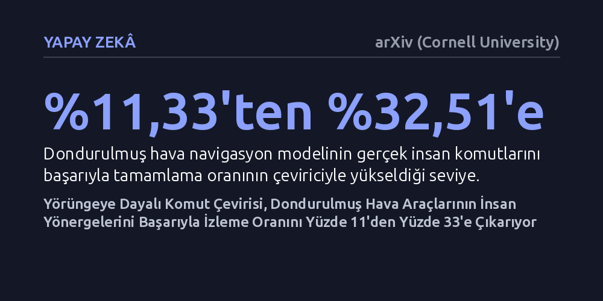

YAPAY-ZEKA · arXiv (Cornell University) · 2026-10-11
Araştırmacılar, dondurulmuş hava navigasyon yapay zekalarının insanların kısa ve niyet odaklı komutlarını nasıl anlayabileceğini araştırdı. Geliştirilen TGIT çevirici, uçuş yörüngelerinden öğrenerek dondurulmuş modelin insan komutlarındaki görev tamamlama başarısını yüzde 11,33'ten yüzde 32,51'e yükseltti.
Büyük robotik ve hava navigasyon modellerini devasa maliyetlerle sıfırdan yeniden eğitmek yerine, araya eklenen akıllı bir çeviriciyle insan diline uyumlu hale getirilebileceğini gösteriyor.

Havadan görüntü işleyerek yolunu bulan insansız hava araçları ve otonom navigasyon sistemleri, genellikle santim santim tarif edilen, adım adım ve görsel ayrıntılarla dolu komutlarla eğitilir. Bir yapay zekaya "üç metre yüksel, kırmızı çatılı binanın üzerinden sağa dön ve park alanına süzül" dendiğinde modeli rotada tutmak nispeten kolaydır. Ancak gerçek dünyada insanlar cihazlara bu şekilde talimat vermez. İnsanlar hedeflerini "köşedeki markete git" veya "hastanenin yanına in" gibi kısa, özet ve niyet odaklı cümlelerle ifade eder.
İşte bu fark, yapay zeka literatüründe "yönerge uçurumu" olarak adlandırılan ciddi bir performans çöküşüne yol açmaktadır. Ayrıntılı adımlarla eğitilmiş bir hava navigasyon modeline insan tarzı kısa bir görev verildiğinde sistem ne yapacağını bilememektedir. Bu çalışmada kullanılan OpenFly adlı gelişmiş hava navigasyon modelinde, adım adım tarifli komutlarda yüzde 31,03 olan görev başarı oranı, insanların verdiği kısa yönergelerle karşılaşıldığında yüzde 11,33 seviyesine kadar gerilemektedir. Her yeni kullanıcı tarzı veya komut yapısı için milyarlarca parametreli devasa navigasyon modellerini sıfırdan eğitmek ise hem devasa bir işlem gücü maliyeti yaratmakta hem de pratik bir çözüm sunmamaktadır.
Araştırma ekibi bu tıkanıklığı aşmak için navigasyon modelinin kendisini değiştirmek yerine, kullanıcı ile hava aracı arasına akıllı bir tercüman yerleştirme fikrini benimsedi. "TGIT" (Yörüngeye Dayalı Komut Çeviricisi) adı verilen bu yaklaşımda, ana hava gezgini modeli "dondurulmuş" halde tutuluyor; yani modelin ağırlıkları ve iç mimarisi hiçbir şekilde yeniden eğitilmiyor. Bunun yerine, insanların kısa ve eksik görünen komutlarını alıp hava aracının anlayacağı teknik ve detaylı komutlara dönüştüren bir ön yüz inşa ediliyor.
Çeviricinin eğitimi için ilk olarak bir büyük dil modeline gerçek insan yazımı örnekler verilerek, orijinal ayrıntılı komutlardan niyet odaklı "zayıf" komut çiftleri üretildi. Bu sentetik komutlar başlangıçta yüzde 15,27 gibi düşük bir başarı sağlasa da çeviricinin öğrenme sürecine zemin hazırladı. Ardından TGIT, sadece metne bakarak çeviri yapmak yerine, dondurulmuş gezginin simülasyondaki uçuş rotası ve yörünge sonuçlarından geri bildirim alarak optimize edildi. Böylece tercüman, hava aracının hangi komutları fiziksel olarak daha iyi icra edebildiğini bizzat deneyimleyerek öğrendi.
Uçuş yörüngelerinin sonuçlarıyla eğitilen bu ön çevirici devreye girdiğinde, sistemin kısa komutlardaki performansı belirgin biçimde arttı. Sentetik zayıf komutlardaki görev başarı oranı yüzde 15,27'den yüzde 37,93'e tırmanarak orijinal detaylı komutların bile üzerine çıktı. Daha da önemlisi, sistem eğitim sırasında hiç görmediği gerçek insan yönergeleriyle sınandığında, yüzde 11,33'e kadar düşmüş olan başarı oranını neredeyse üçe katlayarak yüzde 32,51'e yükseltti.
Modelin genelleme yeteneği farklı ve zorlu ortamlarda da test edildi. Sistemin daha önce hiç karşılaşmadığı ayrılmış OpenFly test verilerinde başlangıçta yüzde 4,95 olan başarı, çevirici sayesinde yüzde 20,79'a çıktı. Üstelik CityNav ve AirVLN gibi bağımsız simülasyon ortamlarında da modelin kaybolan yön bulma yeteneğini toparladığı ve genel seyrüsefer başarısını geri kazandığı gözlemlendi.
Elde edilen sonuçlar, otonom hava araçlarının insanlarla etkileşime girmesinde pahalı ve hantal yeniden eğitim döngülerine mahkum olunmadığını gösteriyor. Donanım veya ana kontrol yazılımı sabit kalırken, araya giren hafif ve yörünge odaklı bir çevirici katmanı, insanların doğal konuşma tarzını teknik uçuş rotalarına başarıyla bağlayabiliyor. Bu yaklaşım, kurtarma operasyonlarından kargo taşımacılığına kadar birçok alanda dronların uzman olmayan kişilerce yönetilmesini kolaylaştırabilir.
Bununla birlikte, başarının yüzde 32,51 seviyesinde kalması ve testlerin henüz fiziksel dünyadaki gerçek insansız hava araçlarıyla değil simülasyon ortamlarında yapılmış olması, teknolojinin hala aşması gereken engeller olduğunu hatırlatıyor. Ancak çalışma, yapay zekanın "insan gibi konuşmayı" öğrenmesi ile "robotun dilini konuşabilmesi" arasındaki dengenin akıllı bir çeviri katmanıyla nasıl kurulabileceğine dair güçlü bir yöntem sunuyor.